LabCoin 2027 — 37 концепции
Шестоъгълна монета с плосък връх, като 2026. Всичко е векторно (SVG) и генерирано от build.py,
така че размерите и дебелините лесно се сменят. Цветовете са примерни филаменти.
A · LAB запълва монетата
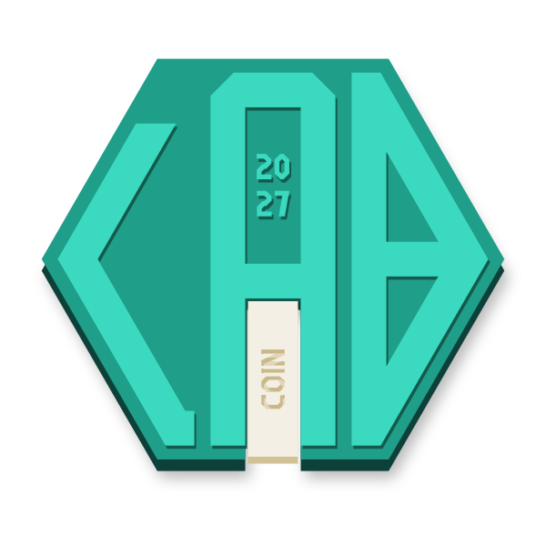
LAB по ръба
L, A и B са „изрязани“ от самия шестоъгълник: L се огъва по левите ръбове, B – по десните, A стои в средата. Под чертата на A има процеп до долния ръб, в който влиза отделна плочка COIN.
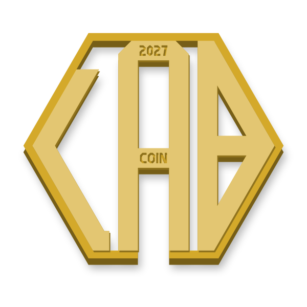
Ажурна LAB
Същите букви по ръба, но всичко между тях е изрязано – монетата е само рамка от L, A и B. Долу в средата е отворена, а COIN и 2027 са гравирани върху чертите на A.
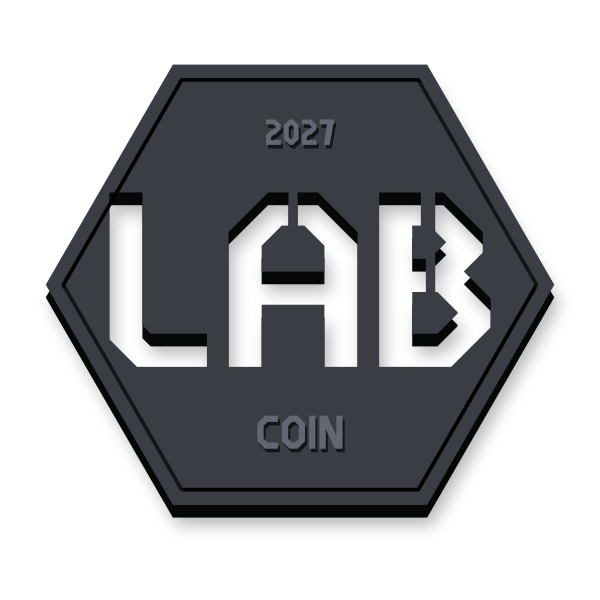
Шаблон
LAB е прорязано през монетата като шаблон (стенсил) – с мостчета, за да не падат вътрешностите. С нея може буквално да се рисува LAB с флумастер.
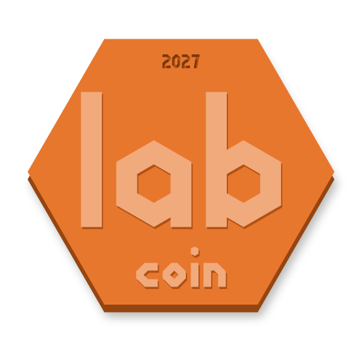
lab с шестоъгълни купи
Малки букви, при които „купите“ на a и b са шестоъгълници – същата форма като монетата. По-мек, приятелски вид.
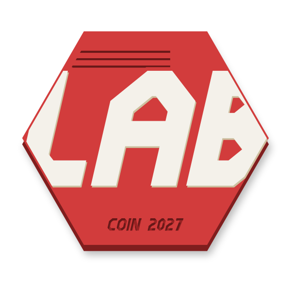
LAB извън ръба
Огромни наклонени букви, които „излизат“ от монетата – ръбът ги реже. Двуцветен печат: буквите са бели, тялото червено.
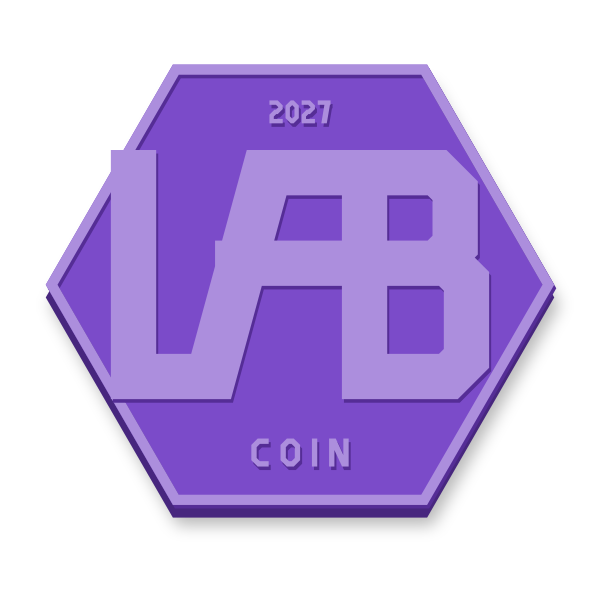
Лигатура LAB
Трите букви споделят черти: стъпалото на L влиза в крака на A, а десният крак на A е гръбнакът на B. Една фигура вместо три букви – лого.
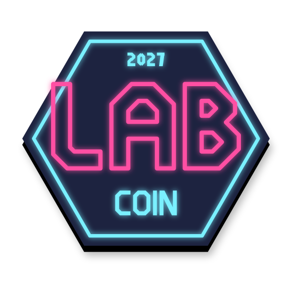
Неон
Буквите са само контури – като неонови тръби върху тъмна основа. Отпечатва се с прозрачна/светеща нишка за контурите.
B · Пъзели от парчета
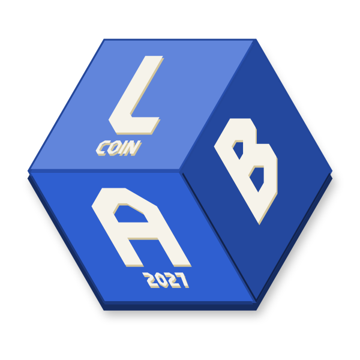
Изометричен куб
Шестоъгълникът е разделен на три ромба – окото го вижда като куб. Всяка стена е отделно парче с една буква. Сглобява се като пъзел от 3 части.
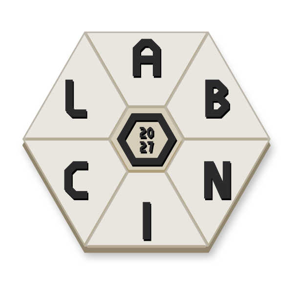
Седем букви
6 триъгълника + център = точно 7 парчета за L-A-B-C-O-I-N. Горе се чете LAB, долу C-O-I-N, а O е централният шестоъгълник с годината.
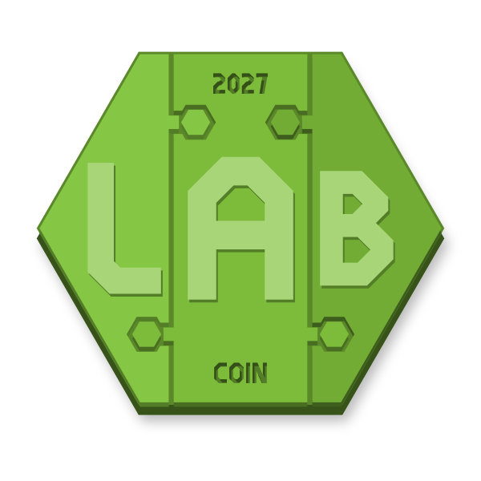
Пъзел с шестоъгълни ключалки
Три вертикални парчета (L | A | B), заключени едно в друго с шестоъгълни „уши“ като на пъзел. Парчетата се вадят и разменят.
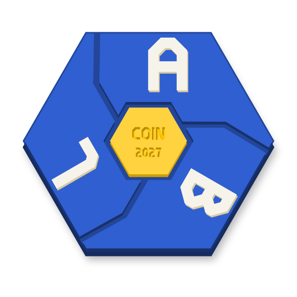
Спинър
Три извити „перки“ с L, A и B около въртящ се център с COIN 2027. Центърът е на лагер (или топче), монетата се върти като фиджет спинър.
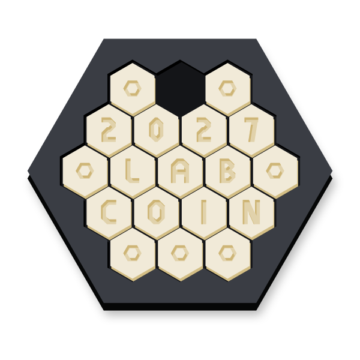
Плъзгащ пъзел
18 шестоъгълни плочки и едно празно място – като „15“, но в пчелна пита. Плочките се плъзгат, докато се подредят 2027 / LAB / COIN.
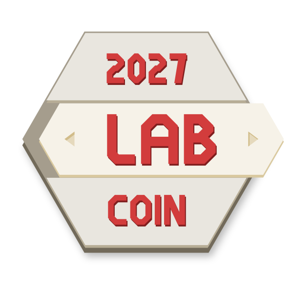
Плъзгащи ленти
Три хоризонтални ленти – 2027 / LAB / COIN. Средната се плъзга наляво-надясно като ключалка с шифър; монетата е „подредена“, когато ръбовете съвпаднат.
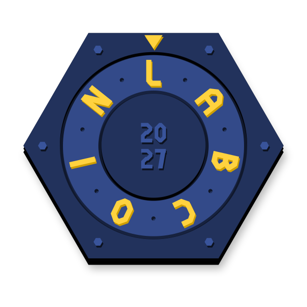
Шифър-диск
Средният пръстен с L-A-B-C-O-I-N се върти в рамката. Стрелката горе показва коя буква е „избрана“, а в центъра е годината.
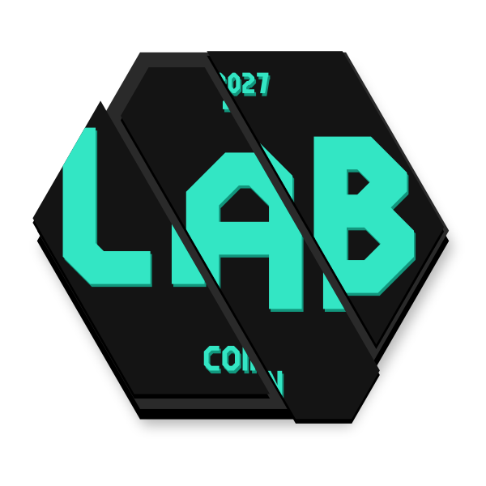
Разместени диагонали
Монетата е нарязана на три ивици под 60° (по ъгъла на шестоъгълника). Ивиците са разместени – целта е да ги плъзнеш обратно, докато LAB се подреди.
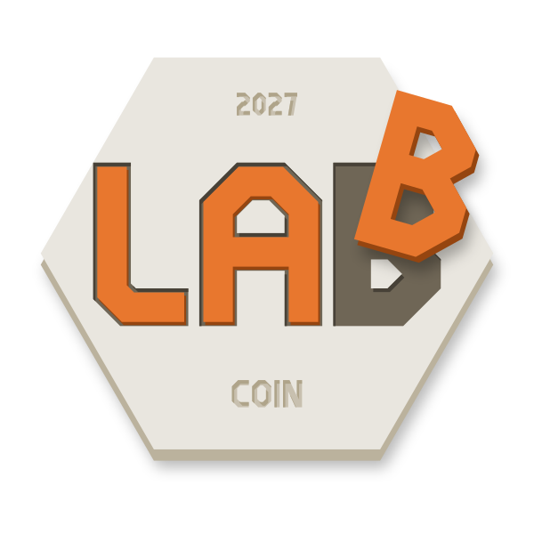
Вадещи се букви
L, A и B са отделни плочки, които „щракват“ в гнезда в монетата (като детски пъзел с форми). На картинката B е извадена.
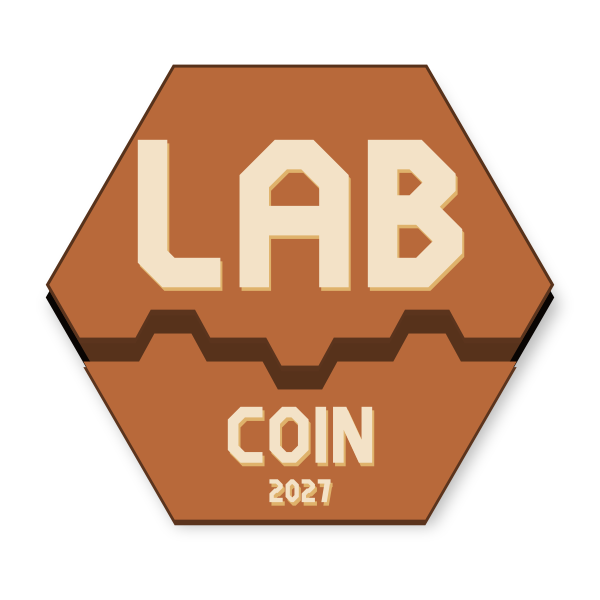
Две половини
Монетата се разделя на две половини, захванати със зъби. Горе LAB, долу COIN и годината. Половинките могат да се раздадат на двама души.
C · Текстури и техники
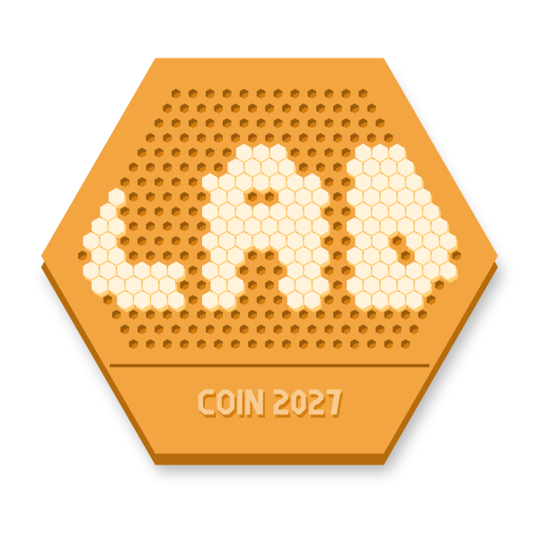
Пчелна пита
LAB е „нарисувано“ с малки шестоъгълни пиксели. Всяка клетка е мини-копие на монетата.
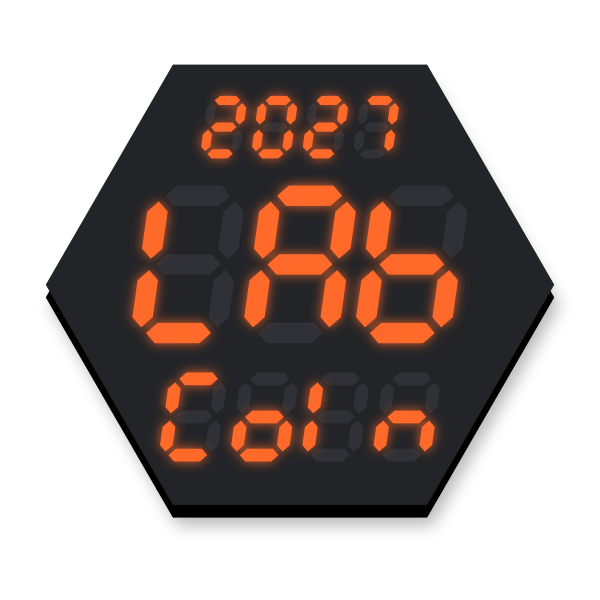
Дисплей
Като дигитален часовник: буквите са от седемсегментни шестоъгълни сегменти. Незапалените сегменти са леко вдлъбнати, светещите – от прозрачна оранжева нишка.
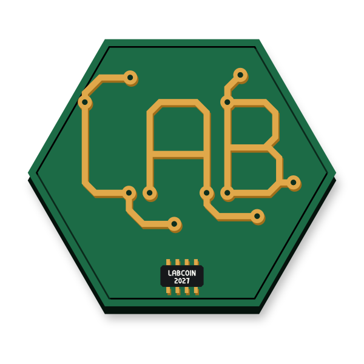
Платка
LAB е разчертано като писти на електронна платка – с контактни площадки и отвори. Отпечатва се зелено + медна нишка.
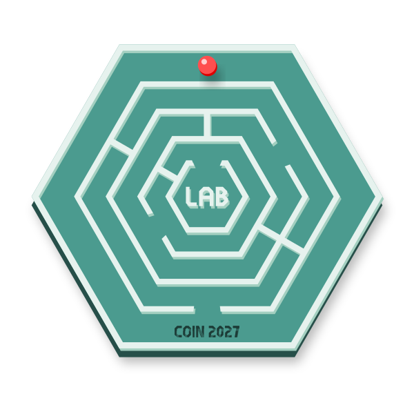
Лабиринт
Игра с топче: прокарай топчето от външния коридор през процепите до LAB в центъра. Отгоре се слага прозрачен капак.
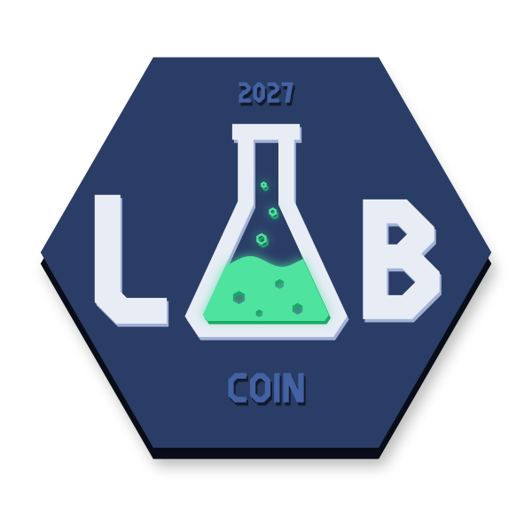
Колба
A е лабораторна колба (Ерленмайер), в която „кипи“ течност с шестоъгълни мехурчета. Нивото на течността е чертата на A.
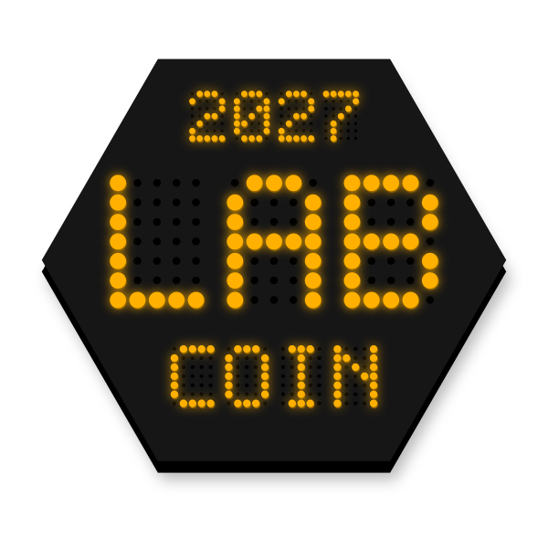
Точкова матрица
Като старо LED табло: всичко е от точки 5×7. Светещите точки са изпъкнали, а „изгасените“ – малки вдлъбнатини.
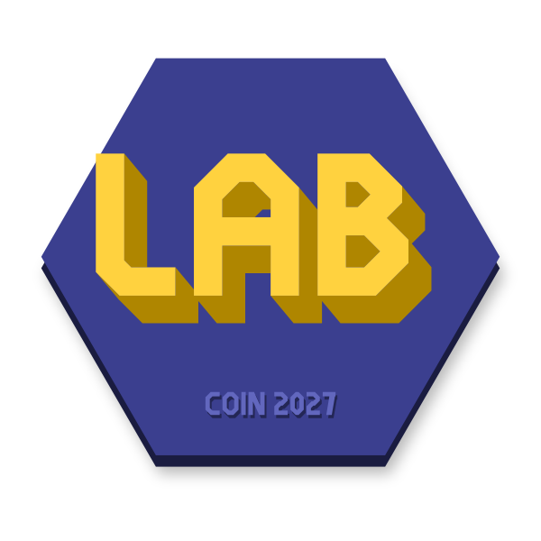
3D букви
LAB е изтеглено в перспектива – буквите изглеждат като обемни блокчета, които „стоят“ върху монетата.
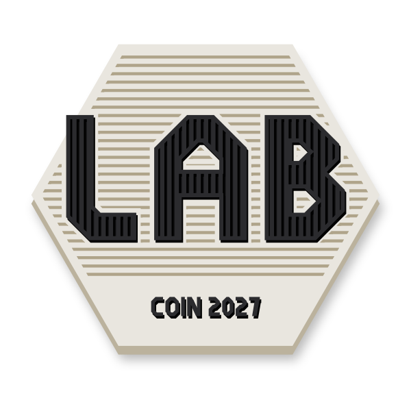
Райета
Оп-арт: фонът е на хоризонтални райета, буквите – на вертикални. Отблизо е шарка, отдалеч се чете LAB.
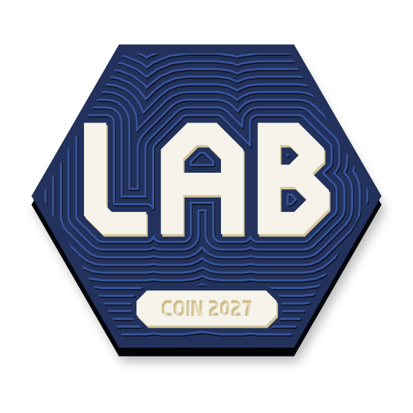
Топографска карта
Около буквите се разливат контурни линии като на карта с височини. Изглежда много добре при печат с фина дюза.
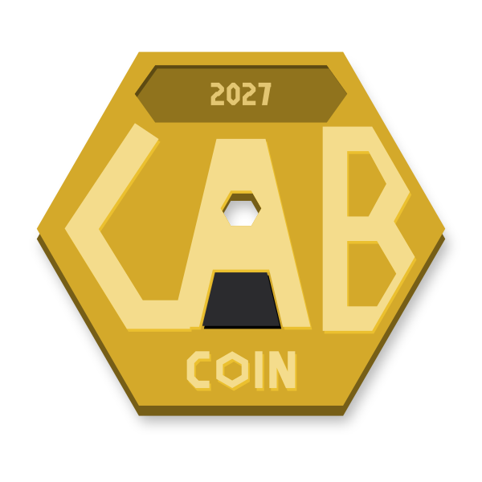
Скицата, изчистена
Най-близо до рисунката с молив: 2027 в удължен шестоъгълник горе, L като „<“, A с шестоъгълен отвор и отделна трапецовидна плочка, B със заострени купи, COIN с шестоъгълно O.
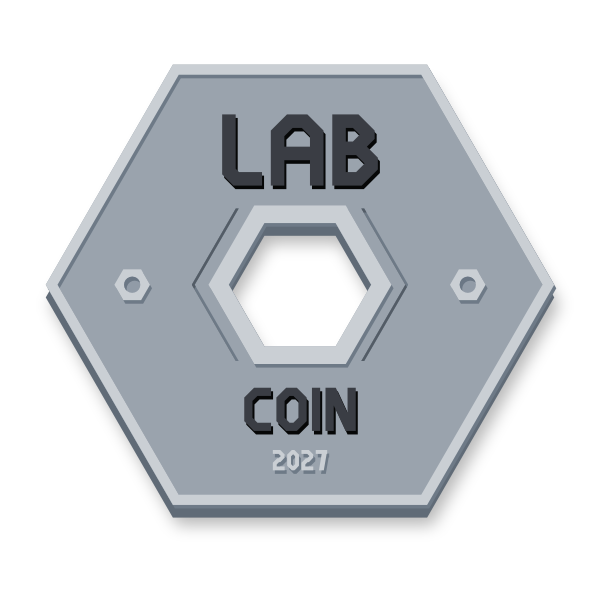
Гайка
Монетата е като голяма гайка – с шестоъгълен отвор в средата (става и за ключодържател или нанизване на шнур). LAB горе, COIN долу, „болтове“ отстрани.
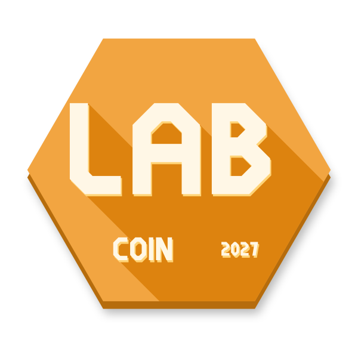
Дълга сянка
Плосък дизайн: буквите хвърлят дълга сянка под 45° чак до ръба на монетата. Сянката е по-ниско ниво от релефа.
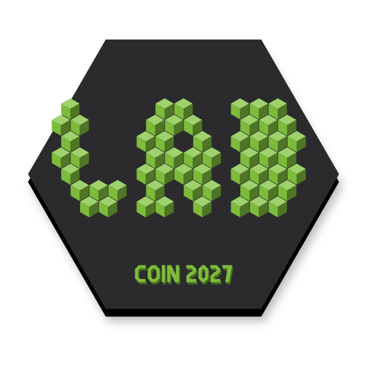
Кубчета
Всеки „пиксел“ на LAB е малко изометрично кубче. Трите стени са в три нюанса – получава се 3D ефект, макар релефът да е плосък.
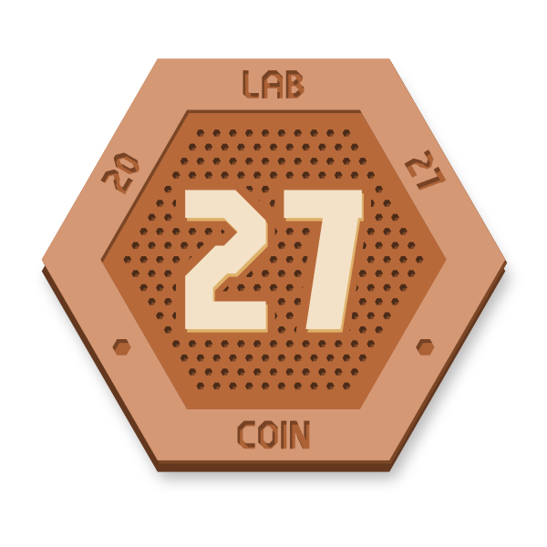
Медал
Широк ръб с надписи по всяка страна (LAB, 20, 27, COIN), а в средата – голямо 27 върху фон от малки шестоъгълници.
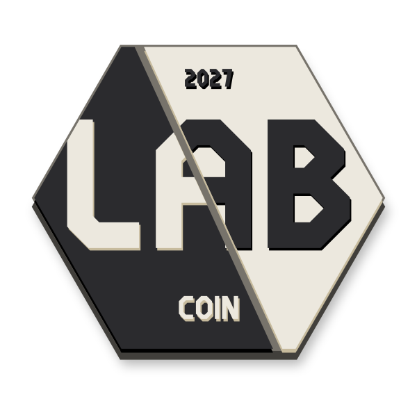
Две половини, два цвята
Монетата е срязана по диагонал на черна и бяла половина; надписите сменят цвета си точно на разреза. Две парчета, два филамента.
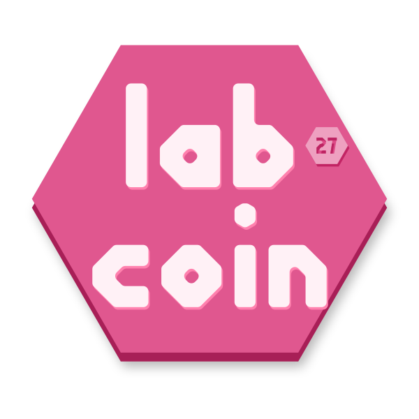
lab coin, заоблени
Малки букви със заоблени ъгли, подредени на два реда. Точката на i е шестоъгълник, а годината е в малка шестоъгълна значка.
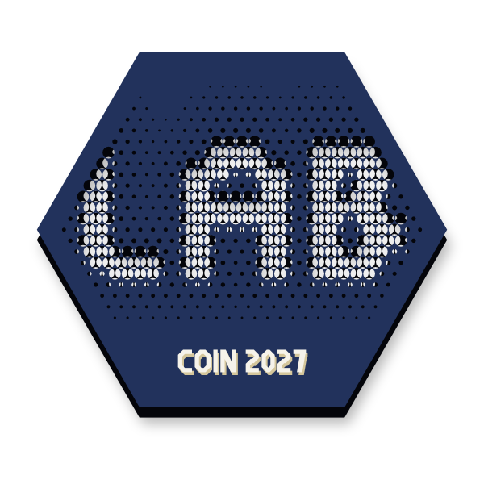
Перфорация
Монетата е надупчена с кръгли отвори – по-големи в буквите и все по-малки навън, като полутонов печат. На светло LAB „свети“ през нея.
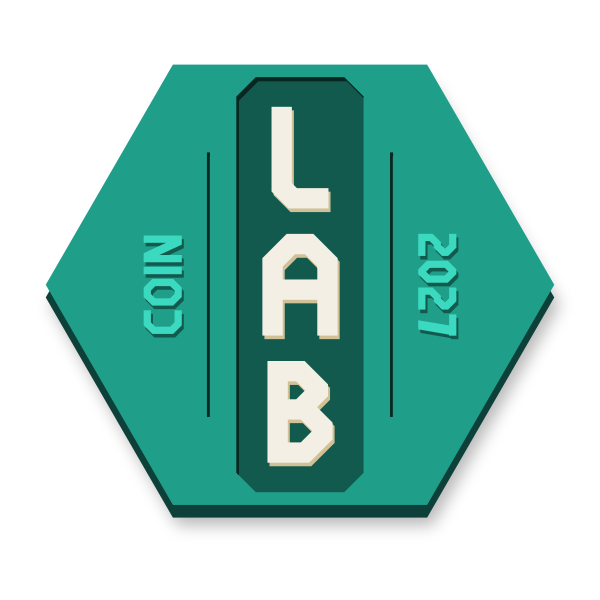
Тотем
LAB е подредено вертикално в канал по средата, а COIN и 2027 текат отстрани нагоре/надолу. Монетата може да виси на връзка.
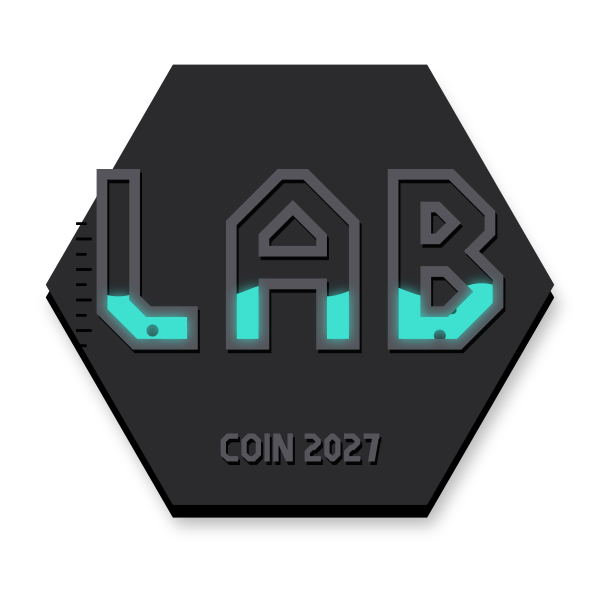
Мензура
Буквите са кухи „съдове“, наполовина пълни с течност с мехурчета – лабораторна тема. Течността е от светеща/прозрачна нишка.
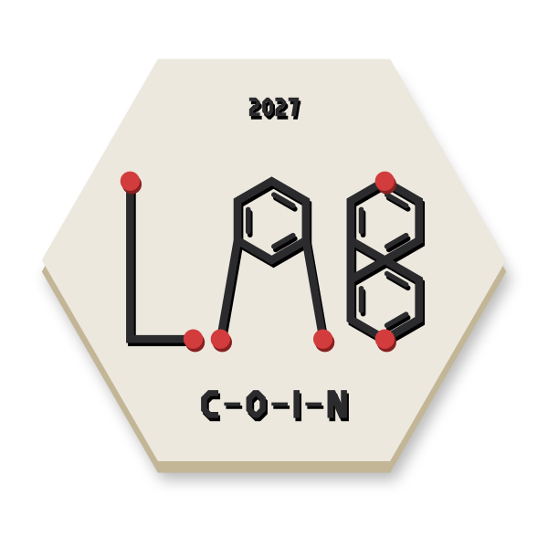
Молекула
LAB е нарисувано като химична формула: B е от два бензенови пръстена, A има пръстен вместо дупка, а COIN е „верига“ от атоми.